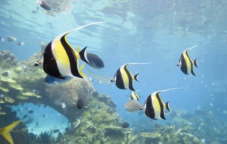

© Ian Scott/shutterstock
All organisms require clean water in order to survive. Have you ever tried to keep tropical fish? The chemistry of successfully maintaining an aquarium—especially a saltwater aquarium—is underestimated by most people who have not had to maintain one.
To properly manage an aquarium, you must test the water’s composition of dissolved substances. Some of these substances include
If you wish to know more about aquarium water quality, read here.
In this lesson you will learn why substances dissolve in water. You will also learn that aquarium chemistry provides valuable insight into the role of dissolved substances in delicate natural ecosystems.
You will complete the Module 4 Assignment 2 in this lesson.
Remember that the questions that are not marked by the teacher provide you with the practice and feedback that you need to successfully complete this course. You should respond to all the questions and place those answers in your course folder.